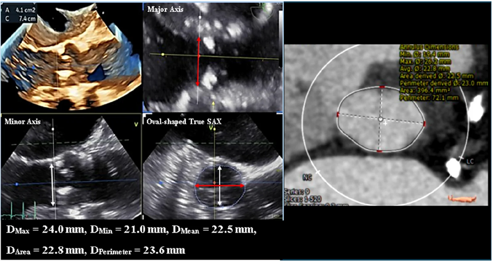

830 — TAVI: vòng van, vành & đường vào / TAVI planning
Tags: pattern:TAVI vung:van-tim protocol:CT-TAVI
Mức chắc chắn (certainty): tổng hợp y văn (literature synthesis) — nhóm tự biên từ y văn mở, chưa gắn ca nguyên văn đơn lẻ.
1. Tổng quan — vòng bầu dục + vành thấp + đùi nhỏ là 3 cửa tử
- Vòng van ĐMC bầu dục (không tròn!) — TẠI SAO đo double-oblique qua hinge points thì 30–40%: axial đơn cắt chéo cho số sai → chọn sai cỡ van (hở/rách!).
- Tắc vành khi bung van: lá van ép vào lỗ vành — TẠI SAO vành < 10–12 mm + xoang < 30 mm là nguy cơ: lá van dài hơn khoảng trống.
- ĐM đùi chung > 5,5–6 mm mới đưa được hệ thống — TẠI SAO: sheath 14–16 Fr (~5–6 mm) + vôi/xoắn là rách/bóc tách.
2. Gamut hẹp van ĐMC (Gamut)
- Vòng vừa + vành cao + đùi tốt: TAVI đùi — mini-TEE + LACS.
- Vành thấp + xoang hẹp + van 2 lá: nguy cơ tắc vành — bảo vệ vành (chimney) + phẫu thuật viên standby.
- Đùi nhỏ/vôi/xoắn: đường khác (dưới đòn/cảnh/trực tiếp ĐMC).
- Hở cạnh van sau TAVI: PVL — TEE đa mặt (sau kém TTE!) + nong thêm/van thứ 2.
3. Bảng so sánh phân biệt (ma trận đối chiếu)
| Thực thể (entity) | Hình ảnh điển hình | Chốt vào (rule-in) | Chốt loại (rule-out) | Gợi ý xác nhận |
|---|---|---|---|---|
| Đủ điều kiện TAVI | Vòng đo chuẩn + vành > 12 mm + đùi > 6 mm | 3 cửa đều đạt | 1 cửa hỏng → đổi đường/kỹ thuật | Heart team + mini-TEE |
| Nguy cơ tắc vành | Vành < 10–12 mm + xoang < 30 mm + lá dài | Thấp + hẹp + van 2 lá | Vành cao + xoang rộng → an toàn | Bảo vệ vành + standby mổ |
| Đường vào xấu | Đùi < 5,5 mm + vôi + xoắn | Sheath không qua | Đùi tốt → đùi | Dưới đòn/cảnh/trực tiếp |
| PVL sau TAVI | Hở cạnh + TEE sau + trước kém TTE | Đa mặt TEE + VCA | Xuyên van → khác | Nong thêm/van thứ 2 |

Trái: MPR 3D qua hinge points; phải: CT cùng bệnh nhân. Nguồn: Chen et al., J Cardiovasc Imaging 2026 Fig. 3, CC BY 4.0.4. Protocol CT TAVI
- CT ECG thì 30–40% + double-oblique + vành mm + đùi + não trước mọi TAVI; TEE trong thủ thuật (mini-TEE + LACS).
flowchart TD
A[Hẹp van ĐMC + TAVI?] --> B{Vòng + vành + đùi?}
B -->|Đạt cả 3| C[TAVI đùi]
B -->|Vành thấp| D[Bảo vệ vành + standby]
B -->|Đùi xấu| E[Đường khác]
5. Cạm bẫy
- Đo axial đơn sai cỡ van — double-oblique hinge points là luật.
- PVL sau TTE bỏ sót (đặc biệt sau!) — TEE đa mặt + VCA 3D mới đủ.
- Suy thận + thuốc cản quang liều cao — TEE dẫn đường giảm thuốc (suy thận 33%!).
6. Tự lượng giá — Blind Quiz
Ca 1 — Hẹp van ĐMC + plan TAVI. Đọc 3D TEE + CT.
- Hỏi: đo ở mặt phẳng nào? Số bao nhiêu? TEE thấp hơn CT bao nhiêu %?
Bấm để hiện đáp án
- Dấu hiệu (findings): vòng 410 mm²/74 mm đo double-oblique qua hinge points.
- Chẩn đoán (diagnosis): đủ điều kiện cỡ van — TEE thấp hơn CT 4–7% nhưng không đổi cỡ van (axial đơn mới là sai!).
- Nguồn: Chen et al., Fig. 3, CC BY 4.0.
Ca 2 — Vành trái 8 mm + xoang 26 mm + van 2 lá: TAVI thường hay bảo vệ vành? (Bảng mục 3.)
Bấm để hiện đáp án
- Nguy cơ tắc vành cao: chimney + standby mổ (đừng bung mù!).
Bài liên quan chéo
- 800 – Tổng quan Tim mạch
- 810 – Vành CAD-RADS (vành trước TAVI)
- 075 – Màng tim (tràn máu màng tim)
Không dùng để chẩn đoán độc lập khi chưa có người hướng dẫn.